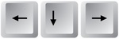
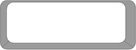

SIGUIENTE PIEZA
COMO JUGAR
- Para mover la pieza: Izquierda | Abajo | Derecha - Para rotar la pieza: Arriba
- Para soltar la pieza: Barra espaciadora 
- Pausar/Reanudar el juego: Letra P

INSTRUCCIONES
El juego consiste en completar lineas horizontales ordenando las piezas que van cayendo. Cuantas mas filas seguidas completes ¡más puntos sumaras! Pista: Atento a la siguiente pieza ;)Para disfrutar de una mejor experiencia de juego, recomiendo jugar en modo pantalla completa. Para ello, pulsa F11 en Windows o Cmd+Shift+F en Mac. Cuando quieras salir vuelve a pulsar la misma tecla. En caso de solapamiento de elementos, prueba a disminuir el zoom de la página jugando con 'Ctrl+' y 'Ctrl-'.
Si pulsa este botón, pulse dentro del tablero para seguir jugando sin reactivarlo.
PUNTUACIÓN
RANKING
Puntuación media:
Número de partidas: